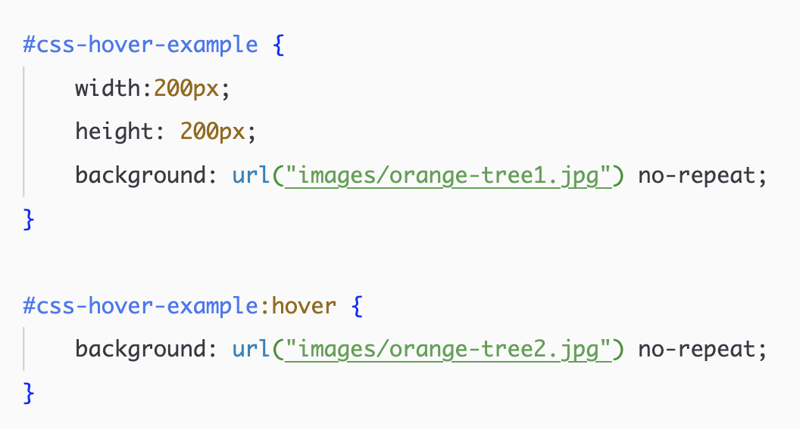

Looking at the two images above with your eyes, you can't really tell the difference between the two. But the first is content on the page, provided by the <img> tag with a src attribute. The second is the "decoration" of a <div> element, with the image loading through CSS as a background declaration.
The image loaded through the <img> tag will be indexed by Google, its alt attribute will be read by screen readers, etc. The image loaded through CSS will not be indexed, as it is not content on the page.
Swapping Images on :hover
Through CSS you can easily swap an image in the background of an element by adding a :hover pseudo class rule. See the example below.
Just beware that :hover won't work properly on mobile devices. It might work in some circumsances, but it might be glitchy. To make it work properly you will need JavaScript to capture mouseOver and touch events separately.